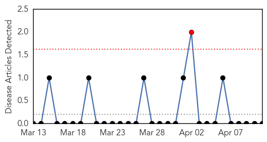
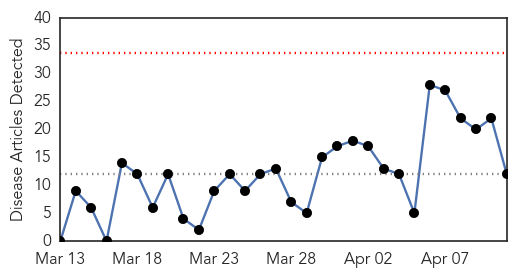
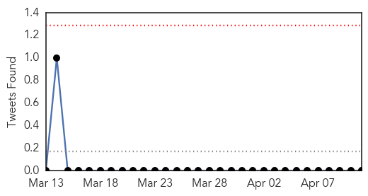
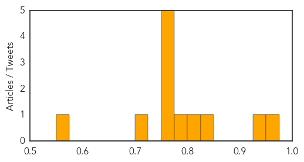

Yellow Fever
30-Day Web Trend
1 alerts, 0 warnings

30-Day Twitter Trend
0 alerts, 0 warnings

Article Locations

Article Confidences

Top Articles:
-
No articles found for Apr 11, 2015
Top Tweets:
-
No tweets found for Apr 11, 2015
Influenza
30-Day Web Trend
0 alerts, 0 warnings

30-Day Twitter Trend
0 alerts, 0 warnings

Article Locations

Article Confidences
Top Articles:
- 0.973
- H5N1 avian influenza outbreak in Egypt prompts CDC travel advisory
- 0.928
- More Bird Flu Cases Confirmed on Turkey Farms
- 0.845
- Why You Should Still Get the Flu Shot
- 0.817
- Bird flu:13 cases confirmed in US since beginning of March
- 0.787
- Dog flu knocking family pets off their feet
- 0.751
- April 11, 2015 Archives
- 0.751
- April 10, 2015 Archives
- 0.751
- April 10, 2015 Archives
- 0.751
- April 10, 2015 Archives
- 0.751
- April 10, 2015 Archives
- 0.724
- Bird flu confirmed at 1 ND turkey farm, 4 more in Minnesota
- 0.559
- New Meets with State and Federal Officials to Discuss Importance of a Rapid Response to Avian Flu
Top Tweets:
-
No tweets found for Apr 11, 2015